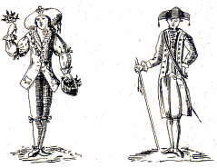
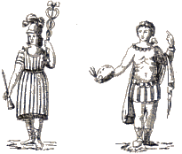
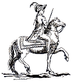

|
|
Prima di vedere i singoli momenti della festa, bisogna capire perché il Palio è sempre al centro dell'attenzione dei senesi. Non essendo né un sociologo né un antropologo, eviterò spiegazioni troppo approfondite, sebbene il terreno sia assai stimolante. Cercherò soprattutto di dare una chiave di lettura, senza la quale questa bellissima tradizione può facilmente esser ritenuta uno spettacolo per turisti. Per altre informazioni è disponibile una pagina sulla storia della Repubblica di Siena.

La storia del Palio affonda le proprie radici nel XIII secolo. In questo periodo, c'era una continua rivalità tra Firenze, guelfa, e Siena, ghibellina. La guerra culminò con la celebre battaglia di Montaperti (4 settembre 1260), citata nel canto X dell'Inferno di Dante (il canto di Farinata degli Uberti), in cui Siena trionfò su Firenze. A quel tempo quindi la città di Siena era capace di tenere testa a Firenze sia culturalmente1 che militarmente.
Lasciamo stare il fatto che la battaglia di Montaperti segnò l'apice della potenza di Siena nel panorama geopolitico del tempo. Non è questo il luogo per discutere sui "topos" della storiografia e sui suoi metodi di divulgazione talvolta assai semplicistici. È abbastanza palese come l'apoteosi della battaglia di Montaperti trovi risvolto nella glorificazione di un periodo, quello comunale, in cui le alleanze politiche avevano un peso relativamente significativo. L'isolamento, sia fisico che politico, sembrava essere a quel tempo la chiave di volta per assicurare alla popolazione del proprio Comune un futuro prospero. Da ciò nacque l'esigenza di innalzare generalmente cinte murarie mastodontiche a difesa dell'incolumità e della salute della popolazione nei confronti di virus e batteri che a quel tempo parevano diffondersi a velocità stratosferiche (basta ricordare la tremenda epidemia di peste bubbonica del 1348 citata da Boccaccio nel Decamerone).

Nell'ambito del nostro discorso sul Palio, ci interessa sottolineare che per qualche tempo il destino della storia italiana fu in bilico tra l'assurgere Siena a capo tra i liberi comuni del centro Italia a danno di Firenze. È solo con l'avvento del XIV secolo che la stella politica e culturale di Firenze si innalzò nel cielo del Rinascimento italiano e andò ad oscurare l'economia di Siena, che restò pur sempre ricca, ma non più al centro della scena politica internazionale. È difficile spiegare per quale ragione Firenze ebbe lentamente, ma inesorabilmente, il sopravvento su Siena. In questa sede azzardo una mia personalissima teoria: Siena, essendo ghibellina, e quindi contro il Papa, non ebbe l'appoggio della Francia, appoggio che ebbe invece Firenze, che risultò vincitrice in queste fratricide lotte tra guelfi e ghibellini proprio grazie a questa alleanza. Peccato davvero, perché il dominio vero e proprio della "ghibellinità" venne soltanto circa duecentosettanta anni dopo la battaglia di Montaperti, nel 1530 con la cacciata dei Medici da Firenze: fu il definitivo declino di Firenze, cominciato con la morte di Lorenzo il Magnifico nel 1492 e seguito da un periodo di forte instabilità.
La famiglia dei Medici non aveva rappresentanti in grado di governare come aveva fatto il predecessore e questo vuoto di potere culminò con la calata precauzionale in Italia nel 1494 da parte di Carlo VIII, re di Francia, che si adoperò per scongiurare colpi di mano rivoluzionari e per rimettere sul trono un membro fantoccio della famiglia dei Medici, sua fedelissima alleata. Ma anche Carlo VIII ebbe i suoi problemi: un frate di nome Girolamo Savonarola aveva costituito a Firenze un governo retto da otto saggi che, caratterizzato da un rigido codice morale e utilizzando il pugno di ferro, voleva far tornare Firenze e la sua Signoria ai principi della religione, dopo i lazzi dell'epoca di Lorenzo (che, come si ricorderà, scriveva molto laicamente: "chi vuol essere lieto sia, del doman non v'è certezza...", fondamentalmente un inno a non pensare al domani, quindi un'implicita negazione dell'aldilà, con tutto ciò che ne conseguiva). Grazie alle trame politiche del re di Francia e alle amicizie dei Medici presso il Papa Alessandro VI, Savonarola fu incriminato per eresia e giustiziato nel 1498 (con evidenti raggiri riconosciuti dallo stesso Nicolò Machiavelli che, come ben noto, approvava tali pratiche come il male minore per dare stabilità politica alla sua città).
Anche il trionfo in Italia della ghibellinità (o meglio, di ciò che di essa restava ormai a quel tempo), avvenuto con la "calata dei Lanzi" nel 1530 ad opera di Carlo V, re di Spagna e neo-imperatore del Sacro Romano Impero della Nazione Germanica e dei suoi celebri Landsknechte, quelli che furono chiamati con un calco interessante dal punto di vista linguistico i "lanzichenecchi", non costituì l'ultima delle invasioni che attendeva il nostro paese. Di lì a poco sarebbero venuti gli spagnoli, poi sarebbero tornati i francesi e in seguito si sarebbero fatti vivi pure gli austriaci, ma queste sono altre storie...
L'età d'oro della Repubblica Senese, stato indipendente che comprendeva buona parte della Toscana meridionale, finì definitivamente nel 1555 quando, dopo l'assedio dell'esercito fiorentino e spagnolo, Siena divenne una piccola città del rinato Granducato Mediceo (con un'influenza assai minore rispetto al passato sullo scenario politico nazionale, dovuto essenzialmente alla scarsa caratura dei rappresentanti della famiglia). È molto probabile che la caduta della Repubblica abbia fatto spostare l'attenzione generale dal mondo esterno a quello interno: non avendo più nessuna influenza sulla politica, i senesi si chiusero dentro le mura e volsero i loro interessi principali alle contrade, "stati nello stato".

Il fatto che le contrade diventassero protagoniste del Palio appunto in questo periodo, può essere spiegato con l'esigenza di mantenere vivo il ricordo della passata libertà e grandezza. La corsa era un'ottima occasione per far vedere la loro forza e serviva a risentire almeno per un giorno il potere e l'autonomia di un tempo. I Palii organizzati dalle contrade erano sempre corsi "alla tonda", cioè in un vero e proprio circuito cittadino, che era poi la piazza principale: Il Campo. Probabilmente oltre al motivo pratico, per cui in questo modo si poteva seguire con attenzione tutta la Carriera, aveva importanza anche il luogo stesso della corsa, che era già allora il punto più interno, più intimo della città. Inoltre, la processione delle contrade che originariamente precedeva il Palio "alla lunga" (cioè su un percorso che si snodava all'interno della città), nel corso dei secoli si è trasformata in corteo storico intorno alla Piazza. Il corteo, chiamato anche "passeggiata storica" dai senesi, non è altro che la dimostrazione dell'antica grandezza di Siena: basti pensare al gruppo dei vessilliferi, rappresentanti le città, paesi e castelli della Repubblica Senese. Il simbolo più evidente dell'orgoglio militare è il carro di trionfo: può esser collegato alla battaglia di Montaperti, in cui i senesi vittoriosi catturarono perfino il carroccio dei fiorentini.

Il ricordo della battaglia di Montaperti, così come la storica rivalità con Firenze, servono anche a spiegare l'impettito orgoglio che caratterizza Siena e i suoi abitanti. Firenze è una città medievale rivestita dalle ricchezze del Rinascimento. Forse, nell'immagine complessiva, prevale il rivestimento patinato dovuto ai banchieri e ai grandi mercanti. Siena resta invece medievale e quasi immobilizzata nel tempo. Prendiamo due esempi architettonici: Palazzo Sansedoni in Piazza del Campo è un palazzo ottocentesco rifatto con lo stile del Quattrocento. Lo avreste mai detto? Anche il celeberrimo Palazzo Chigi-Saracini è un palazzo costruito nel Cinquecento, quando il Medioevo era già tramontato, ma evidentemente i senesi già allora andavano alla ricerca del tempo perduto! A Siena si hanno momenti perfetti in cui il passato più lontano risale a galla fino a noi, confondendosi col presente.
Generalmente i senesi sono molto orgogliosi della loro diversità rispetto ai sempiterni rivali fiorentini. E queste puntualizzazioni, che potrebbero sembrare capziose soprattutto per chi non è toscano, si rivelano invece azzeccatissime. I senesi si considerano per certi versi cittadini antitetici rispetto al rapporto che i fiorentini hanno con la loro città. Questa antitesi ha qualcosa di vero, non solo perché nella storia di Siena si ritrova una tendenza libertaria più acuta (attenuata a Firenze dal "Principato" - che di fatto era una dittatura mascherata - e dagli interessi economici che gli giravano attorno). Una differenza fondamentale tra Firenze e Siena sta nella loro divisione del popolo: Firenze fu sempre divisa in corporazioni e in arti (quelle che oggi si chiamano albi e ordini professionali), in questo seguendo maggiormente le spinte economiche della città. Le categorie di persone erano associate tra di loro senza nessun riguardo alla nascita in questo o quel quartiere. La divisione fondamentale di Siena fu invece dettata sempre da fattori topografici, che dettero luogo alle Contrade. è verosimile, come molti libri di storia paliesca riportano, che vi fosse una certa amalgama sociale nelle Contrade: abbiamo così la categoria dei notai nella Contrada dell'Aquila, i banchieri in quella del Drago, gli orafi in quella del Leocorno, i tintori in quella dell'Oca e via dicendo. Ma l'attaccamento alla Contrada non ebbe mai un'origine ricollegabile agli interessi, per non parlare di politica. Fu invece sempre dettato da funzioni di mutuo soccorso e di solidarietà riconducibile alla funzione delle Compagnie laicali, che erano enti assistenziali di cui si ha notizia fin dal 1200 e che avevano, tra gli altri compiti, quello di fornire assistenza ai pellegrini in transito sulla Via Francigena e diretti a Roma nei luoghi di preghiera del culto cristiano. Il passo tra i compiti assistenziali delle Compagnie laicali e quelli delle Contrade è piuttosto breve, specie in un'epoca in cui le epidemie compivano vere e proprie decimazioni della popolazione. La Contrada divenne così un guscio sotto il quale ci si poteva riparare dalle intemperie della vita. Forse non è un caso che due tra le prime Contrade di cui si ha notizia a Siena siano proprio quelle della Tartuca e della Chiocciola, due animali che fanno del loro guscio la propria arma migliore. I primi documenti ne attestano l'esistenza già intorno al 1270, cioè all'indomani della battaglia di Montaperti. In questa sede, spero che lo si evinca dal contesto del ragionamento, non è di rilievo stabilire quale sia stata la prima Contrada a nascere. è invece importantissimo sottolineare lo spirito e la ragione che ne decretò lo sviluppo su base solidaristica. L'appartenenza alla Contrada dipese fin da subito da parametri prenatali dei genitori. Insomma, lo spirito di Contrada (e ancora oggi è così), non fu mai pensiero dettato da interesse, ma passione contratta con il semplice venire al mondo.
Sebbene quanto detto finora spieghi le origini della Contrada, intesa come istituzione corporativo-assistenziale tra liberi cittadini di uno dei tanti Comuni italiani del Duecento, occorre analizzare un altro aspetto che di nuovo si ricollega al periodo della battaglia di Montaperti. Le Contrade furono probabilmente il risultato dell'accorpamento in tempo di pace di istituzioni che dovevano funzionare in tempo di guerra: le cosiddette Compagnie militari. Le unità combattenti dei diversi rioni dovevano essere in grado di essere operative in tempi brevissimi. La storia stessa della battaglia di Montaperti ci insegna che l'esercito senese, composto appunto dalle Compagnie militari rionali, dovette praticamente essere allestito in una quindicina di giorni. A prescindere dal fatto che i senesi in quella battaglia riuscirono a vincere, la lezione non passò sotto silenzio. L'esercito cittadino doveva essere pronto in qualsiasi condizione a difendere la città.
Le Contrade nacquero in un'epoca in cui la duplice esigenza di proteggere la comunità dei cittadini nei periodi di pace e di guerra era fondamentale. La storia di Siena non è in questo molto differente da quella di altri liberi Comuni dell'Italia medievale. è altresì vero come numerose manifestazioni rievocative della gloria comunale esistessero già in epoca cinquecentesca in altre città italiane. Anzi, alcune di esse nacquero proprio in quel periodo e, tanto per restare in Toscana, basterà citare il Calcio Storico fiorentino, che iniziò a quel tempo le sue celebrazioni (all'epoca si chiamava "Pallonata"). Tutto ciò, tuttavia, non ci aiuta a capire il "fenomeno" Palio. Anzi, il quadro generale si complica, e non di poco. Perché a Siena la tradizione del Palio, iniziata anch'essa nel Cinquecento, non ebbe mai a tramontare? Basta forse affermare (con semplicismo storico-antropologico) che i senesi si sono dimostrati essere nei secoli un popolo godereccio e festaiolo? Purtroppo moltissime analisi del Palio dicono questo. Si spiega con l'istinto libertario senese (che pure è storicamente innegabile) la perpetuazione di un "fenomeno" che non ha eguali al mondo. Si pensi solo, a tale proposito, che in mezzo a tante manifestazioni rievocative quali la Giostra del Saracino ad Arezzo, la Passeggiata dei Ceri a Gubbio, il Gioco del Ponte a Pisa e tante altre ancora, Siena è la sola città in Italia (e forse al mondo) dove i cittadini ricchi donano patrimoni cospicui e i poveri i loro piccoli risparmi per far vincere alla propria Contrada un drappo di seta!!!
1 Si ricorda che qualche decennio dopo, all'inizio del Trecento, sono attivi a Siena Simone Martini e Duccio di Buoninsegna, mentre nello stesso periodo a Firenze le avvisaglie in campo pittorico sono ben lungi dal produrre i geni che produrranno in seguito (Masaccio arriverà addirittura cento anni dopo!!). A tale scopo è interessante notare che proprio a partire dalla seconda metà del Duecento la pittura senese gode dei suoi maggiori splendori, mentre a Firenze l'unica tra le arti maggiori che esprime grandi talenti è l'architettura, con Arnolfo di Cambio. Il che non ci esime dal sospettare che la tradizione culturale di Firenze sia in quel periodo notevolmente inferiore a quella senese che si concentra sulla pittura, già allora considerata come arte meno terrigna e più sublime rispetto all'architettura urbana. Ciò nonostante Arnolfo di Cambio viene assoldato qualche anno dopo dai senesi per dirigere i lavori di costruzione della celebre Torre del Mangia del Palazzo Comunale (per rivaleggiare coi fiorentini, i senesi decidono di commissionarla allo stesso architetto che ha costruito Palazzo Vecchio di Firenze e decidono di costruirla un po' più snella di questa e, ovviamente, di qualche metro più alta).
|

|
|


 LA PSICOLOGIA DEL PALIO E DELLE CONTRADE -
LA PSICOLOGIA DEL PALIO E DELLE CONTRADE -